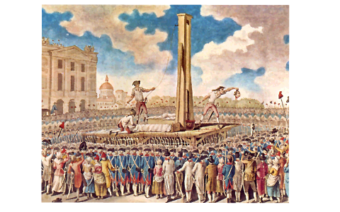

La Revolución Francesa
Libertad, Igualdad y Fraternidad contra el Antiguo Régimen · 1789
El año de 1789 marcó el colapso del orden feudal en Francia. Bajo el yugo de una profunda crisis financiera, el derroche de la corte real de Luis XVI y el descontento de la burguesía, el Tercer Estado alzó la voz para demandar una transformación política radical.

La Caída de la Bastilla
La tensión estalló por completo el 14 de julio de 1789, cuando el pueblo de París asaltó la fortaleza de la Bastilla, símbolo medieval de la tiranía absolutista. Este suceso histórico catalizó la creación de la Asamblea Nacional Constituyente, la cual proclamó la célebre Declaración de los Derechos del Hombre y del Ciudadano.
El Régimen del Terror
La revolución se radicalizó drásticamente con la caída de la monarquía y el nacimiento de la Primera República. Liderados por Maximilien Robespierre y los Jacobinos, el periodo conocido como "El Terror" (1793–1794) cubrió de sangre las plazas francesas utilizando la guillotina como máxima herramienta de purga política, ejecutando incluso a los propios reyes.

Hacia un Nuevo Orden
Tras la ejecución de Robespierre en la Reacción Termidoriana, el poder pasó a un Directorio moderado que luchó por mantener la estabilidad nacional. Finalmente, la inestabilidad concluyó en 1799, cuando un joven y brillante general llamado Napoleón Bonaparte ejecutó el Golpe de Estado del 18 de brumario, abriendo paso a un nuevo capítulo en la historia global.